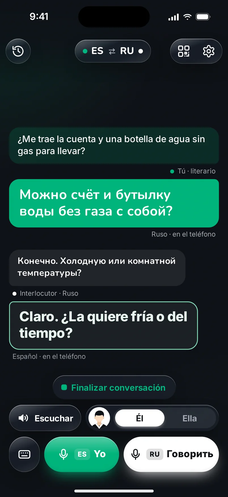
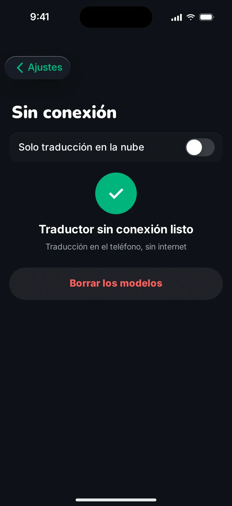

Habla como puedas, suena impecable.
Parrlo primero entiende lo que querías decir y solo después traduce.
ejemplo real
No traducimos palabras. Traducimos lo que querías decir.
El habla real no es perfecta. Tiene titubeos, repeticiones, palabras que se empiezan y se abandonan a medias. Parrlo no las repite en otro idioma. Escucha hasta el final, capta el sentido y escribe tu idea como lo diría alguien que domina la lengua: una frase limpia, serena y correcta. Y solo esa se traduce.
- Los titubeos se quedan contigo.
- Las repeticiones desaparecen.
- El sentido llega entero.
Ejemplos de nuestras pruebas internas (ES⇄RU). La traducción en los demás idiomas del sitio se muestra a modo orientativo.
Cadaqués, no «Cadenas».
Dices «a Cadenas». Parrlo oye Cadaqués. Averigua de qué lugar hablas y lo nombra como suelen escribirlo y decirlo los de allí. Lo mismo con calles, ciudades, tiendas y estaciones: los nombres llegan tal como los reconocerá tu interlocutor.
- Cadaqués
- Girona
- Cercanías
- Mercadona
Maqueta
Tu voz sigue siendo tuya.
Con tu consentimiento, Parrlo crea una copia de tu voz: bastan unos dos minutos leyendo en voz alta. Escuchas un ejemplo, decides si te quedas con ella y puedes borrar tu voz por completo cuando quieras.
Habla como te venga mejor.
- 1
Cara a cara.
La conversación va por turnos, como con un intérprete a tu lado. Parrlo recuerda quién tienes delante y pone las palabras en el género correcto.
- 2
Con código QR.
Enseña a tu interlocutor el código QR de tu pantalla. Apunta con la cámara y la conversación se abre en su navegador. No hay que instalar nada ni registrarse.
- 3
En los mensajes.
¿Te ha llegado un WhatsApp en otro idioma? Pégalo en Parrlo o envíalo con «Compartir» y léelo en el tuyo. Escribe la respuesta como te salga: Parrlo la convierte en un texto correcto que solo te queda enviar.


Maqueta

Maqueta
Sin cobertura. Con traducción.
Normalmente la traducción ocurre en la nube. Pero si has descargado el traductor sin conexión en Ajustes, Parrlo traduce en la montaña y en el metro, directamente en tu teléfono.
Tus conversaciones se guardan en tu teléfono y tus datos siguen bajo tu control.
Habla como puedas.
Parrlo hace el resto.
Precios
Free0 €10 frases al día
Callado2,99 € / meso 19,99 € / año · Para quien habla de vez en cuando
Parlanchín5,99 € / meso 29,99 € / año · Para quien habla mucho
Empieza gratis. Puedes cancelar cuando quieras en App Store.
Preguntas frecuentes
¿Qué hace Parrlo de otra manera?
Parrlo primero convierte el habla reconocida en un texto limpio y literario, corrigiendo lapsus y repeticiones, y solo después traduce.
¿Funciona sin internet?
Sí. Normalmente traduce en la nube y, sin conexión, directamente en el teléfono si has descargado el traductor sin conexión en Ajustes.
¿Mi interlocutor tiene que instalar la app?
No. Escanea el código QR de tu pantalla y la conversación se abre en su navegador.
¿Puedo traducir mensajes de WhatsApp?
Sí, en el modo Texto: pega el mensaje o envíalo con «Compartir». Parrlo traducirá tu respuesta a un español correcto.
¿Cómo se usa mi voz?
Tu voz solo se crea si grabas una muestra y das tu consentimiento. Puedes borrarla cuando quieras.
¿Cuánto cuesta?
Gratis, 10 frases al día. Después, Callado o Parlanchín, precios arriba. Dudas: hello@parrlo.com.